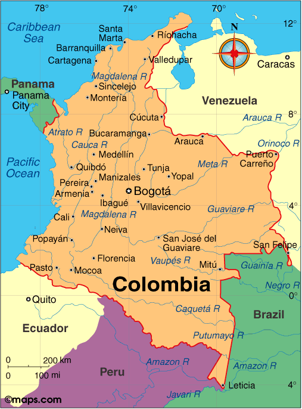

Colombia Pre-Departure Packet
EDUC 480 - Howard University
Spring Break 2025
Overview of Colombia
Colombia, situated at the northern tip of South America, is a country of remarkable diversity and charm. Boasting a population of over 50 million, it’s a melting pot of cultures, from indigenous communities to descendants of Spanish colonizers and African slaves. The country spans a variety of landscapes, from the Andes Mountains to the Amazon rainforest, Caribbean and Pacific coastlines.

Trip Schedule
Our trip will be hosted by ORIGIN+CULTURE, a Howard-alumna run Colombian-local travel organization.
Day 1-3: Bogotá
Bogotá, the capital city, sits at an elevation of 2,640 meters (8,660 ft) in the Andes Mountains.
Day 1
- Arrive at El Dorado International Airport
- Check-in at hotel in La Candelaria district
- Evening walk around Plaza Bolívar
Day 2
- Morning: Visit the Gold Museum (Museo del Oro)
- Afternoon: Explore La Candelaria’s colorful streets and colonial architecture
- Evening: Dinner at Andrés DC for a taste of Colombian cuisine and culture
Day 3
- Morning: Take the cable car to Monserrate for panoramic city views
- Afternoon: Visit the Botero Museum
- Evening: Street food tour in the Chapinero district
Day 4-6: Coffee Triangle
The Coffee Triangle (Eje Cafetero) is a region known for its coffee plantations, lush landscapes, and traditional culture.
Day 4
- Fly to Armenia
- Transfer to Salento
- Afternoon: Walking tour of Salento’s colorful streets
Day 5
- Full-day tour of Cocora Valley, home to the world’s tallest palm trees
- Hike through cloud forests and enjoy a traditional almuerzo (lunch)
Day 6
- Morning: Coffee farm tour and tasting
- Afternoon: Visit to Filandia, a picturesque coffee town
- Evening: Return to Salento for dinner at Camino Real
Day 7-9: Medellín
Medellín, once notorious for its violence, has transformed into a city of innovation and culture.
Day 7
- Morning flight to Medellín
- Afternoon: City tour including Plaza Botero and Parque Arví cable car ride
- Evening: Dinner in El Poblado neighborhood
Day 8
- Day trip to Guatapé
- Climb El Peñol for stunning views
- Boat tour on the reservoir
- Explore the colorful town of Guatapé
Day 9
- Morning: Visit to Comuna 13 for graffiti tour
- Afternoon: Explore Botanical Garden and Parque Explora
- Evening: Farewell dinner at Carmen restaurant
Day 10-13: Cartagena
Cartagena, a UNESCO World Heritage site, offers a perfect blend of Caribbean atmosphere and colonial charm.
Day 10
- Morning flight to Cartagena
- Afternoon: Walking tour of the walled city
- Evening: Sunset drinks at Café del Mar
Day 11
- Morning: Visit to Castillo San Felipe de Barajas
- Afternoon: Free time for shopping or beach
- Evening: Salsa class followed by dinner at La Cevicheria
Day 12
- Day trip to Rosario Islands
- Snorkeling in crystal-clear waters
- Beach relaxation
- Fresh seafood lunch
Day 13
- Morning: Last-minute shopping in the old town
- Afternoon: Depart for Rafael Núñez International Airport
Packing List
Clothing
- Lightweight, breathable clothing for hot weather
- Long-sleeved shirts and pants for mosquito protection
- Rain jacket or poncho
- Swimwear
- Light sweater or jacket for cooler evenings (especially in Bogotá)
- Comfortable walking shoes
- Sandals or flip-flops
Accessories
- Sun hat
- Sunglasses
- Daypack for excursions
- Reusable water bottle
- Travel locks
- Money belt
Electronics
- Smartphone and charger
- Camera
- Power bank
- Universal travel adapter
- Kindle or e-reader (optional)
Toiletries
- Sunscreen (SPF 30 or higher)
- Insect repellent
- Hand sanitizer
- Personal medications
- Basic first-aid kit
Documents
- Passport (valid for at least 6 months beyond your return date)
- Travel insurance documents
- Credit cards and some cash (Colombian Pesos)
- Copies of important documents
Travel Information
Best Time to Visit
Colombia’s climate varies by region, but generally, the best times to visit are:
- December to March
- July to August
These periods correspond to the dry seasons in most of the country. However, Colombia can be visited year-round, with each season offering unique experiences.
Visa and Entry Requirements
- Most visitors can enter Colombia without a visa for stays up to 90 days.
- You’ll need a passport valid for at least 6 months beyond your planned return date.
- Proof of onward travel (return ticket) may be required.
- Check the Colombian Ministry of Foreign Affairs website for the most up-to-date information.
Health and Vaccinations
- Consult your doctor or a travel clinic at least 4-6 weeks before your trip.
- Routine vaccinations should be up to date.
- Yellow fever vaccination is recommended for some regions.
- Consider malaria prophylaxis if visiting rural or jungle areas.
Safety
Colombia has made significant strides in safety, but it’s important to stay vigilant:
- Stick to tourist areas and avoid walking alone at night.
- Use official taxis or ride-sharing apps.
- Keep valuables secure and be aware of your surroundings.
- Register with your country’s embassy or consulate before travel.
Transportation
- Domestic flights are an efficient way to travel between major cities.
- Buses are a comfortable and affordable option for shorter distances.
- In cities, use official taxis, Uber, or local ride-sharing apps.
- The Transmilenio bus system in Bogotá is an efficient way to get around the capital.
Language
Spanish is the official language. While English is spoken in some tourist areas, learning basic Spanish phrases will greatly enhance your experience and interactions with locals.
Money
- The currency is the Colombian Peso (COP).
- Credit cards are widely accepted in cities and tourist areas.
- ATMs are readily available in urban areas.
- Inform your bank of your travel plans to avoid card blocks.
Remember to check the latest travel advisories and health requirements before your trip. ¡Buen viaje!